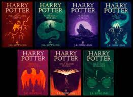

Harry Potter is a series of seven fantasy novels written by British author J. K. Rowling. The novels chronicle the lives of a young wizard, Harry Potter,
and his friends Hermione Granger and Ron Weasley, all of whom are students at Hogwarts School of Witchcraft and Wizardry. The main story arc concerns
Harry's struggle against Lord Voldemort, a dark wizard who intends to become immortal, overthrow the wizard governing body known as the Ministry of Magic
and subjugate all wizards and Muggles (non-magical people).
The success of the books and films has allowed the Harry Potter franchise to expand with numerous derivative works, a travelling exhibition that premiered
in Chicago in 2009, a studio tour in London that opened in 2012, a digital platform on which J. K. Rowling updates the series with new information and insight,
and a pentalogy of spin-off films premiering in November 2016 with Fantastic Beasts and Where to Find Them, among many other developments. Themed attractions,
collectively known as The Wizarding World of Harry Potter, have been built at several Universal Parks & Resorts amusement parks around the world.
Plot
Harry Potter is the most miserable, lonely boy you can imagine. He’s shunned by his relatives, the Dursleys, who have raised him since he was an infant. He’s forced
to live in the cupboard under the stairs, forced to wear his cousin Dudley’s hand-me-down clothes, and forced to go to his neighbour’s house when the rest of the family
is doing something fun. Yes, he’s just about as miserable as you can get.
Harry’s world gets turned upside down on his 11th birthday, however. A magical half-giant, Hagrid, informs Harry that he’s really a wizard, and will soon be attending
Hogwarts School of Witchcraft and Wizardry. Harry also learns that, in the wizarding world, he’s a hero. When he was an infant, the evil Lord Voldemort killed his
parents and then tried to kill Harry too. What’s so amazing to everyone is that Harry survived, and allegedly destroyed Voldemort in the process.
When Harry hears all this, he doesn’t know what to think. However, everything Hagrid tells him turns out to be true, and with a joyful heart Harry starts wizarding
school in September. He quickly becomes best friends with a boy named Ron Weasley, and before they even make it to Christmas, they break tons of school rules when
they attack a troll and prevent it from killing fellow student Hermione Granger. After the troll incident, the three become inseparable, and Harry is amazed to have
found such great friends. He is constantly busy trying to stay on top of the mounds of homework, as well as participating in weekly Quidditch practices. Quidditch is a
popular sport among wizards and Harry is the youngest Quidditch player in over a century. It's also a game Harry loves more than anything else at school.
As the year progresses, the three friends set out to solve the mystery of the gigantic three-headed dog that is guarding something in a deserted corridor in the school.
They figure out that a very valuable object, the Sorcerer’s Stone, is being hidden in the school, although they don’t know why. When one of the professors starts acting
as if he’s trying to steal it, they quickly take action to circumvent the theft.
Things come to a head when they sneak past the vicious, three-headed dog and go down into the bowels of the school, determined to save the stone. Ron and Hermione help
Harry get through the challenges set forth to stop the thief, but Harry must go on alone to battle the professor. When he finally gets to the last room, however, he’s
astonished to find someone else entirely.
Harry is forced to do battle with the wizard that tried to kill him so many years before, Lord Voldemort. He’s able to save the Sorcerer’s Stone, although he’s almost
killed in process. The school headmaster, Dumbledore, arrives just in time to save Harry.
The school year ends spectacularly. Harry, Ron, and Hermione are honored for their service to the school, and Harry leaves to go back to the Dursley’s for the summer
feeling as if he’s finally found a place where he really belongs.
Books

- Harry Potter and the Sorcerer’s Stone (1997)
- Harry Potter and the Chamber of Secrets (1998)
- Harry Potter and the Prisoner of Azkaban (1999)
- Harry Potter and the Goblet of Fire (2000)
- Harry Potter and the Order of the Phoenix (2003)
- Harry Potter and the Half-Blood Prince (2005)
- Harry Potter and the Deathly Hallows (2007)
- Harry Potter and the Cursed Child (2016)
Movies

- Harry Potter and the Philospher's Stone(2001)
- Harry Potter and the Chamber of Secret(2002)
- Harry Potter and the Prisoner of Azkaban(2004)
- Harry Potter and the Goblet of Fire(2005)
- Harry Potter and the Order of the Phoenix(2007)
- Harry Potter and the Half-Blood Prince(2009)
- Harry Potter and the Deathly Hallows Part-1(2010)
- Harry Potter and the Daethly Hallows Part-2(2011)